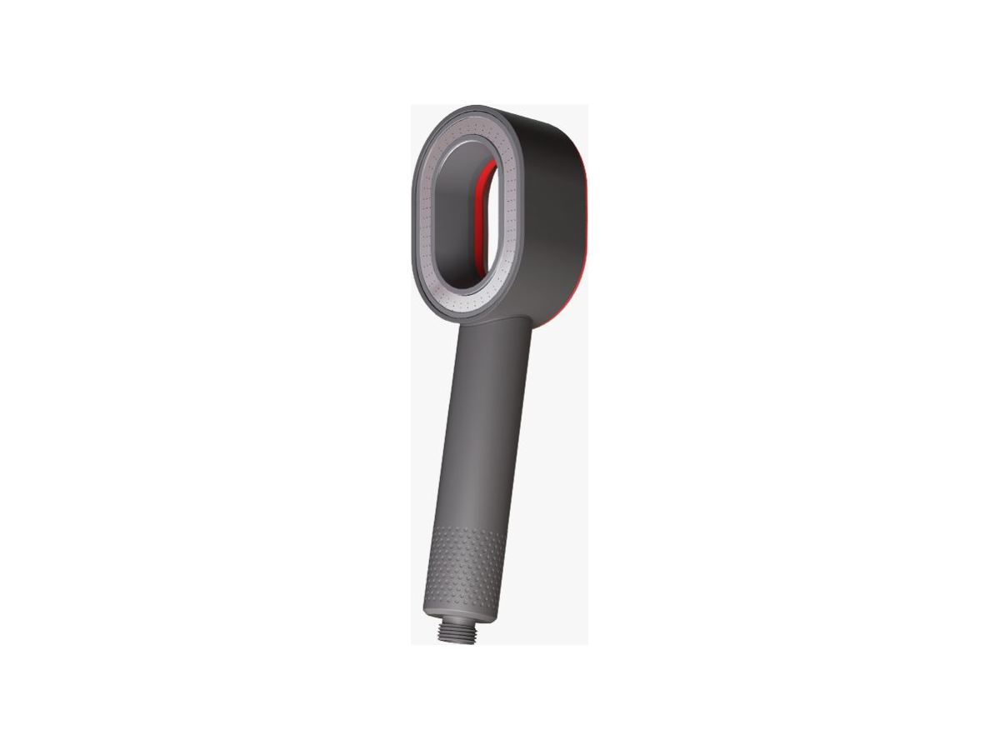

シャワー
シャワーRP-S01
ハンドヘルドシャワーフィルター
SKU: RP-S01
MOQ：お問い合わせ時に確認

シャワーフィルター
マルチモードシャワーフィルター（JK-C1）— 4モデル
RP-S07、RP-S08、RP-S05、RP-S09は同じマルチモードシャワーフィルターファミリーの4モデルです。RP-S07（ホワイト・パープル）、RP-S08（ベージュ）、RP-S05（ブラック）は同じモデルの3色。RP-S09（ベージュ、ゴールドリング）は同じ金型で複合PPコットン＋ビタミンCカートリッジを使用。仕様はモデルと注文ごとに確認します。
4モデル — 次のようにもお見積もりくださいRP-S08（ベージュ）,RP-S05（ブラック）またはRP-S09（ビタミンC）.
電圧／周波数は対象国に合わせて設定可能です。その他の構成は注文ごとに確認します。
RP-S07はマルチモードシャワーフィルター（JK-C1）で、同じファミリーの4モデルです。RP-S07（ホワイト・パープル）、RP-S08（ベージュ）、RP-S05（ブラック）は同じモデルの3色。RP-S09（ベージュ、ゴールドリング）は同じ金型で複合PPコットン＋ビタミンCカートリッジを使用。4モデルとも7シャワーモード、360°無段階調節、G1/2接続を備えます。RP-S07／RP-S08／RP-S05のカタログ値は使用圧力0.1～0.4MPa、水温5～60°C、流量5～7L/分、カートリッジ寿命約3か月。RP-S09の値はご注文ごとに確認いたします。最初の3モデルは3つのフィルターオプション（ACF、PP＋ビタミンCアロマ、PPコットン）を提供します。
最小注文数量はいくつですか？
初回注文はモデルあたり200台、再注文は500台です。
大口注文の前にサンプルを注文できますか？
はい。サンプルは15日でご用意できます。サンプル費用は初回大口注文時に返金されます。大口注文はサンプル承認後40日で出荷し、FOB深圳条件となります。
4つのモデルからどう選べばよいですか？
RP-S07、RP-S08、RP-S05は同じモデルの3色（ホワイト・パープル、ベージュ、ブラック）です。RP-S09は同じ金型のビタミンCモデルで、複合PPコットン＋ビタミンCカートリッジ付きです。RP-S07として見積もり、モデルを指定してください。
バリアント画像にホバーすると仕様が表示されます。タッチ画面では画像をタップしてください。


各バリエーションのフルスペックを並べて表示。下の仕様表はRP-S07の値です。
| 仕様 | RP-S07-1 — ホワイト・パープル（JK-C1） | RP-S07-2 — ベージュ（JK-C2） | RP-S07-3 — ブラック（JK-C1） | RP-S07-4 — ビタミンC（JK-C3） |
|---|---|---|---|---|
| カラー | ホワイト・パープル | ベージュ | ブラック | ベージュ、ゴールドリング |
| カートリッジ | フィルター3種：ACF／PP＋ビタミンCアロマ／PPコットン | フィルター3種：ACF／PP＋ビタミンCアロマ／PPコットン | フィルター3種：ACF／PP＋ビタミンCアロマ／PPコットン | PPコットン複合＋ビタミンC |
| シャワーモード | 7 | 7 | 7 | 7 |
| コントロール | 360°無段階調節 | 360°無段階調節 | 360°無段階調節 | 360°無段階調節 |
| 接続 | G1/2 | G1/2 | G1/2 | G1/2 |
| 使用圧力 | 0.1-0.4 MPa | 0.1-0.4 MPa | 0.1-0.4 MPa | ご注文ごとに確認いたします |
| 水温 | 5-60°C | 5-60°C | 5-60°C | ご注文ごとに確認いたします |
| 流量 | 5-7 L/min | 5-7 L/min | 5-7 L/min | ご注文ごとに確認いたします |
| カートリッジ寿命 | 約3か月 | 約3か月 | 約3か月 | ご注文ごとに確認いたします |
RP-S07／RP-S08／RP-S05の使用圧力、温度、流量、カートリッジ寿命はこのモデルのカタログ値です（RP-S05に記載のとおり）。RP-S09の値はご注文ごとに確認いたします。
ROPureOEMカタログの仕様 6 行。
| シャワーモード | 7 |
|---|---|
| コントロール | 360°無段階調節 |
| 接続 | G1/2 |
| カートリッジ | ご注文ごとに確認いたします |
| 流量／圧力／温度 | ご注文ごとに確認いたします |
| カートリッジ寿命／寸法 | ご注文ごとに確認いたします |
仕様はROPureOEMカタログに基づいています。値がまだ確認されていない場合は「注文ごとに確認」と記載しています。未確認の数値は公表しません。
シャワーハンドヘルドシャワーフィルター
SKU: RP-S01
MOQ：お問い合わせ時に確認

シャワー長方形シャワーフィルター
SKU: RP-S03
MOQ：お問い合わせ時に確認
 シャワー
シャワーポータブルシャワーフィルター
SKU: RP-S10
MOQ：お問い合わせ時に確認
 シャワー
シャワーインラインシャワープレフィルター
SKU: RP-S11
MOQ：お問い合わせ時に確認